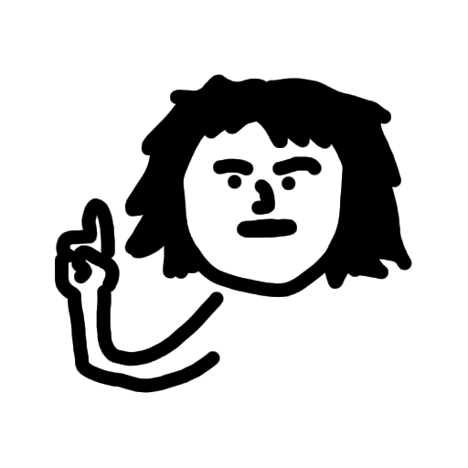
Tobias Wahyudi
Roguelike, Rule Discovery, Word Game, TCG, Procedural Generation enjoyer.
I make music, 3d models, crafts, but mostly games.
Open to collaborating! Send me an email!
Games
I really enjoy making browser games, probably because they remind me of flash games.
Most of these are engine-less and even library-less, developed with vanilla JS on Canvas API.
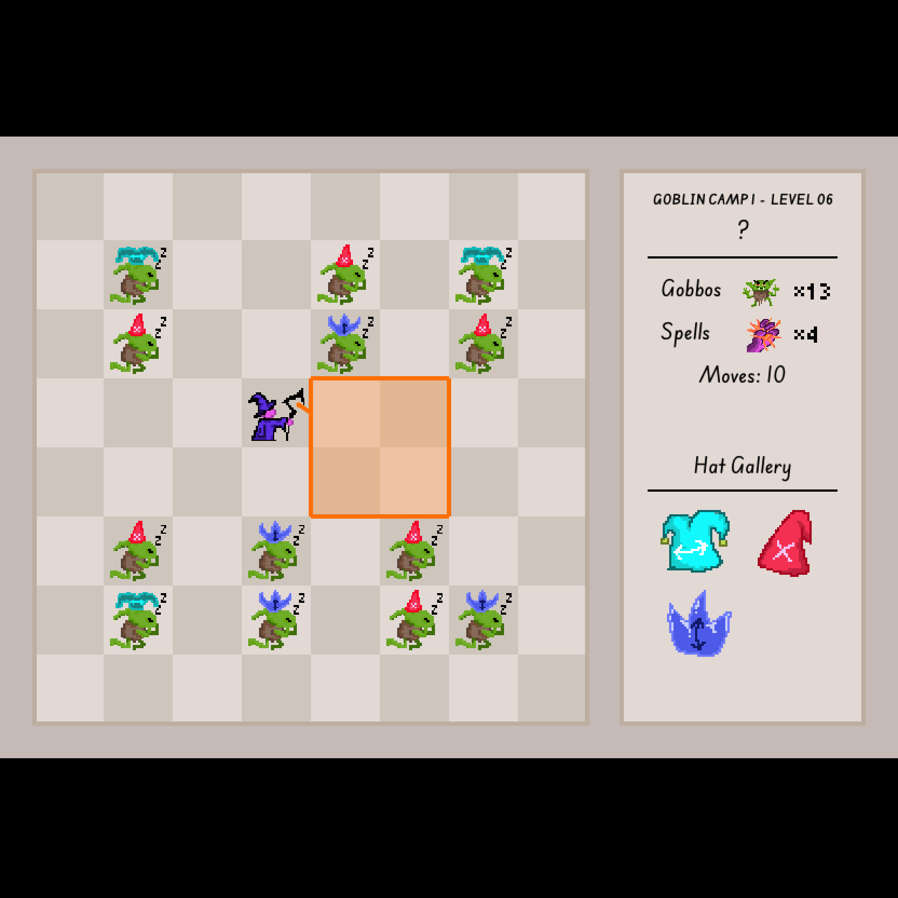
Jun 2025 - Mar 2026
Sokoban-like (?) puzzle game. You must clear all goblins, but each hit changes the shape and position of your aiming.
It was really fun to see how complex we could make the levels, while not expanding the simple ruleset.
Collaborative project with my siblings Terri and Thalia.
Developed and illustrated by me. Designed and puzzleset together.
Community acclaimed.
Demoed at ⁂ Socratica Symposium 2026!
Read more →
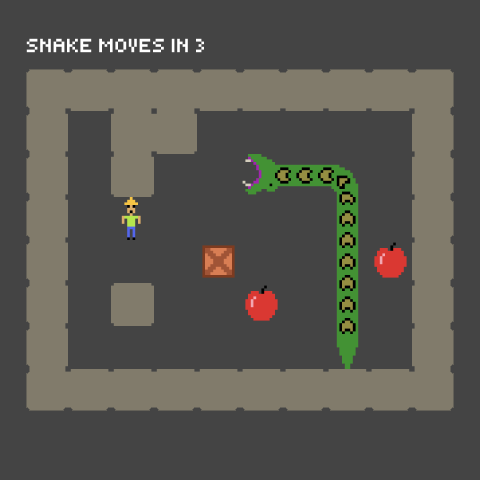
Aug 2025
Sokoban-like puzzle game. You control the wrangler, and the snake moves deterministically.
Guide the snake to eat apples and ultimately bite its own tail.
Inspired by Paquerette down the Bunburrows for puzzle reasoning around deterministic NPCs.
Collaborative project with my siblings Terri and Thalia. Created for GMTK Game Jam 2025 with the theme "Loop".
Read more →
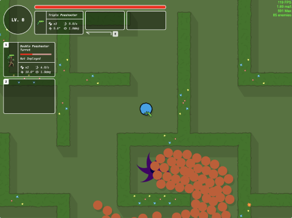
Jan 2024 - Feb 2024
Survivor-like. Escape a hedge maze by selectively breeding your plant weaponry.
Unfinished. Fun anyway.
Read more →
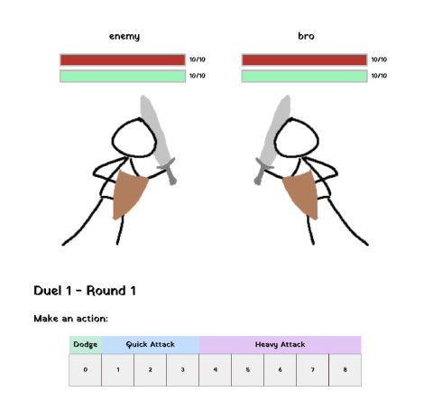
Dec 2023
1v1 rock-paper-scissors style game. Originally conceived by my cousin Max as a mini-game for his D&D campaign. Interesting for its simplicity.
The game is P2P and WebRTC is really tricky ☹️ It may not reliably outside a local network.
Read more →
New Media Art / Studies
All of these projects are written in p5js.
I so deeply love p5js. I find it very very comfortable.
It's almost always the first thing I pick up to sketch out an idea, or sometimes I'll use it as a visual complement to jupyter notebooks.
I also love its mission of accessibility & teaching, but it's also powerful enough that I've seen more than a few art installations use it.
When any friend expresses a desire to start learning programming, I literally always tell them to pick up p5js.

Oct 2026
Q: Could I animate something in p5? like with keyframes and such?
A: Yes, but it doesn't look or feel that good.
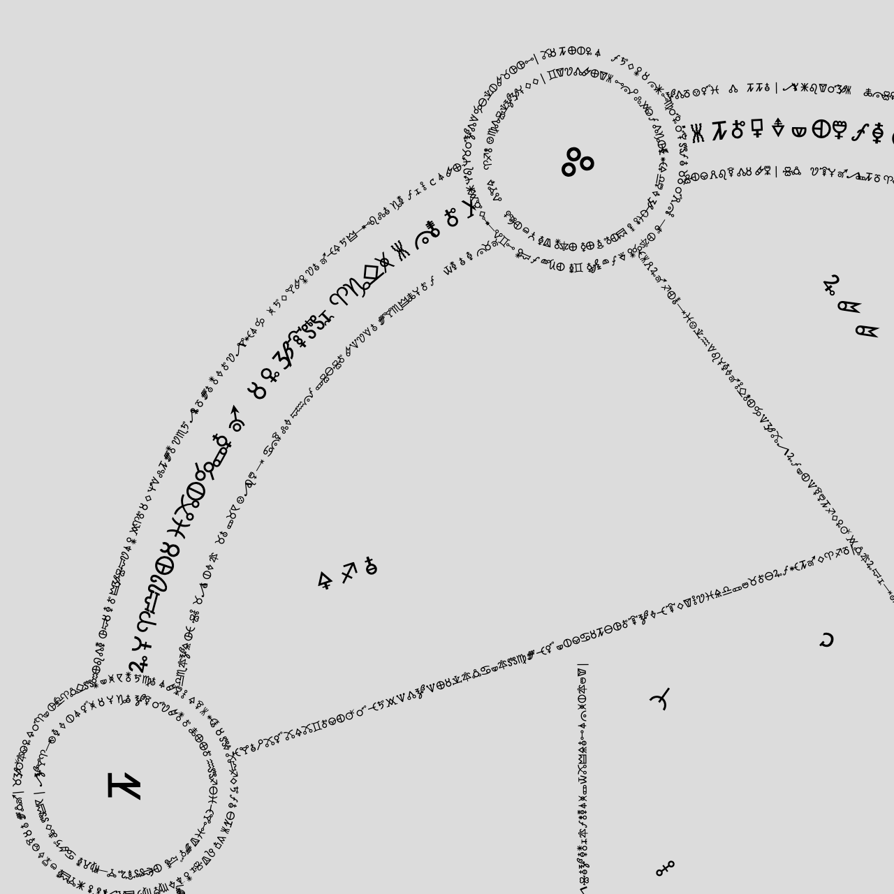
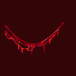
Sep 2026
Best of the verlet rope series. Shudders on click. Chromatically aberrated (around this time I figured out p5 shaders)
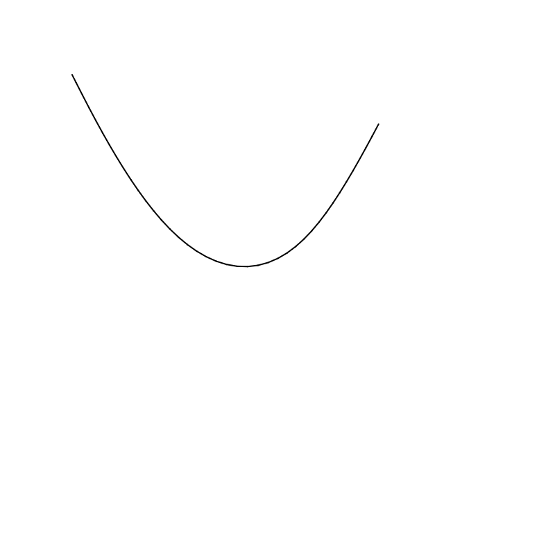
Sep 2026
Study of rope behavior using Positional Verlet Integration. This was inspiring and spawned a series of variations.
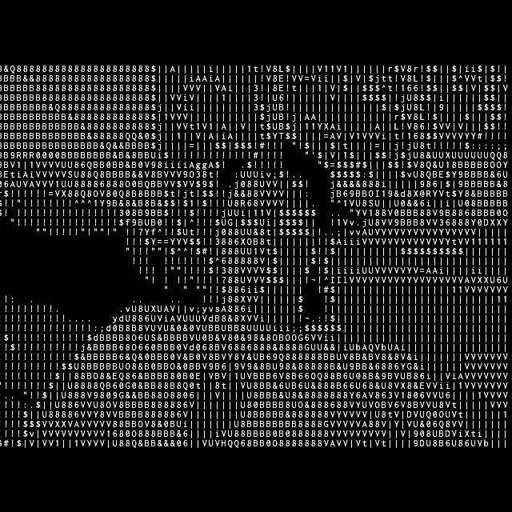
May 2026
A study into ASCII rendering. Consider that sampling based on characters' shapes can provide more pleasing results than simple luminance-based sampling. Almost entirely derived from a fantastic blog post by Alex Harri.
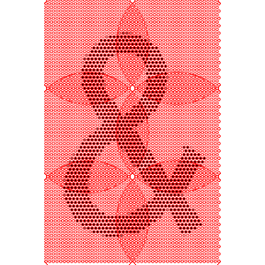
May 2026
Precomputation for Textel. Interesting to watch!
Mar 2026
This is what's on the background.
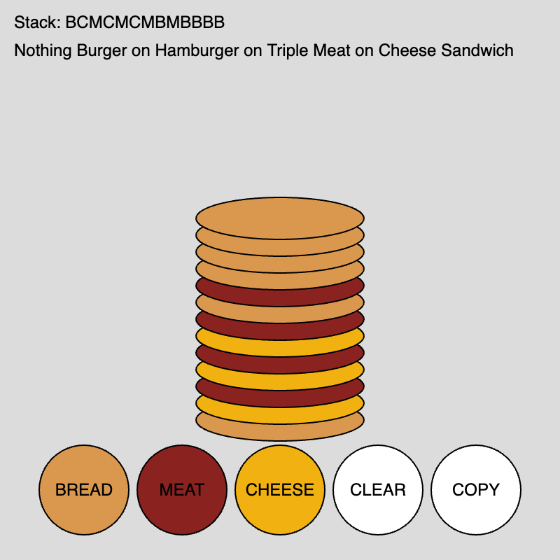
Mar 2026
A joke concept, pushed into a joke hackathon project (i won). Eventually I developed this into Folly Burger.
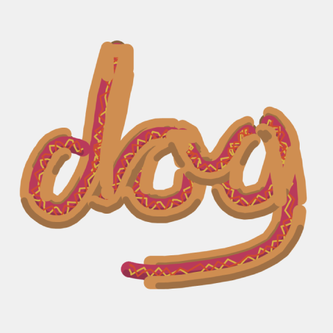
Feb 2026
Inspired. I amaze myself. Probably came from a dream.
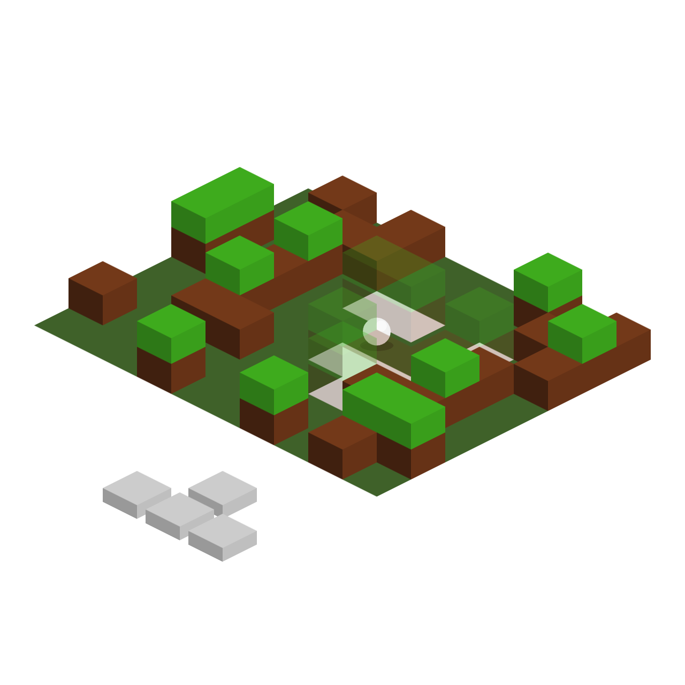
Jan 2026
Testing the limits on how quickly I could develop something resembling a game purely in P5.
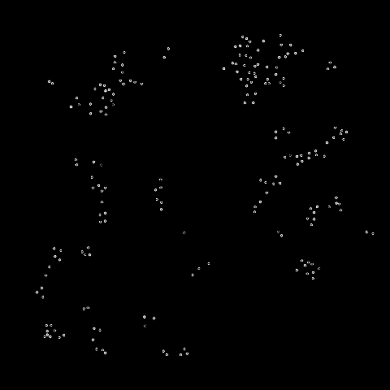
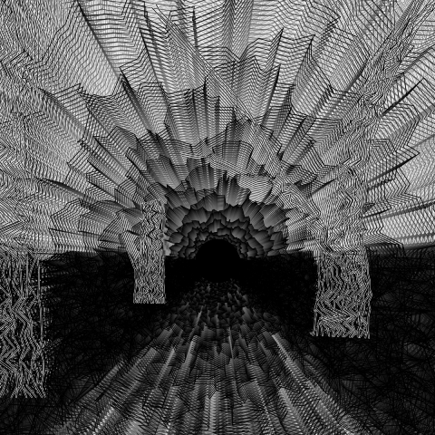
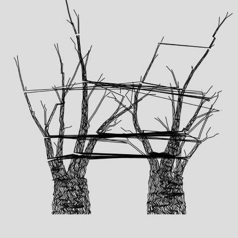
Dec 2025
An exploration in procedurally generating trees.
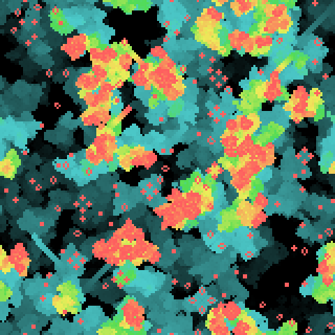
Apr 2021
One of my first experiments with Processing.